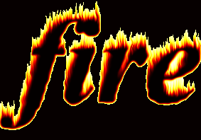

Колледж КГУ:
Линейка работ по веб-разработке:
«Если Вы сделаете хорошую работу для хороших клиентов, то это приведет к
следующей хорошей работе для других хороших клиентов. А если Вы
сделаете плохую работу для плохих клиентов, то это, в свою очередь,
приведет к другой плохой работе для других плохих клиентов».
Наши проекты

Шаг 1
Откройте исходное изображение в программе Photoshop.
Назовите слой с данным исходным изображением Оригинал (Original).
Шаг 2
Продублируйте слой Оригинал (Original). Назовите дубликат слоя Эффект Мозаики (Mosaic Effect).
Поместите слой Оригинал (Original) поверх слоя Эффект Мозаики (Mosaic Effect).
Шаг 3
Возвращаемся на слой Эффект Мозаики (Mosaic Effect), чтобы создать эффект пикселей.
Идём Фильтр – Оформление – Мозаика (Filter > Pixelate > Mosaic).Установите Размер ячейки (cell size) на 12.
Шаг 4
Возвращаемся на слой Оригинал (Original).
Включите видимость данного слоя, а затем добавьте слой-маску к этому слою.
Шаг 6
Выберите инструмент Кисть (Brush Tool) и с помощью мягкой белой кисти прокрасьте участки изображения,
которые вы хотите восстановить. Не забудьте, что при прокрашивании кистью
должна быть активной слой-маска, а не миниатюра слоя
Шаг 8
Итак, мы создали
эффект мозаики на фотографии в программе Photoshop.
Эффект пикселизации можно редактировать, поэтому вы можете варьировать размер ячеек
от 2 до 200 px максимум.

Создайте новый документ (Ctrl+N), залейте его (G) чёрным цветом. Яркий свет виден только
в темноте — когда вы зажигаете огонь в дневное время суток, то он выглядит слабым .
Если вы используете белый фон, то, как бы вы не старались нарисовать огонь, ярче он не станет.
Создайте новый слой (Ctrl+Shift+Alt+N). С помощью инструмента Эллипс (Ellipse Tool (U)),
удерживая клавишу Shift, нарисуйте круг.Щёлкните правой кнопкой мыши по слою с кругом
и в появившемся окне выберите опцию Растрировать стили слоя (Rasterize Layer Style).
Далее, идём Фильтр – Размытие - Размытие по Гауссу (Filter > Blur > Gaussian Blur)
Создайте дубликат слоя с кругом (Ctrl+J),скройте видимость оригинального слоя с кругом,
чтобы у вас была запасная копия. Далее, перейдите на дубликат слоя и далее, выберите
Фильтр – Пластика (Filter > Liquify).
Далее добавляем внешнее свечение и поиграм с
непрозрачностью.Пламя огня – это постоянное движение, поэтому огонь выглядит подделкой,
если он статичный. Чтобы избежать этого эффекта, идём Фильтр – Размытие –
Размытие в движении (Filter > Blur > Motion Blur).

Выберем инструмент "Горизонтальный текст" (Т) и напишем произвольное слово. Чтобы эффект был хорошо виден,
я написал всего одну букву и сделал её максимально большой.
Разблокируем фоновый слой ("Задний план"),
для чего просто перетащим замок на значок мусорной корзины в палитре "Слои".
Всё, наш эффект готов!
Мы получили букву, заполненную текстурой фотографии тигра.
Перетащил это изображение на букву и расположил
новый слой в самом низу палитры "Слои". Вызываем окно "Стиль слоя", для чего два раза левой клавишей
мыши щёлкаю по текстовому слою (средний слой).
Делаем активной вкладку "Тиснение" и ставим параметры,
которые Вы видите ниже на скриншоте. Вы, естественно, можете поставить настройки, которые Вам подходят.